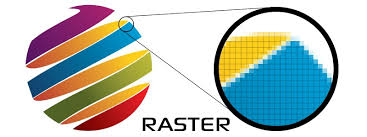
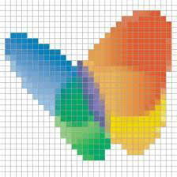
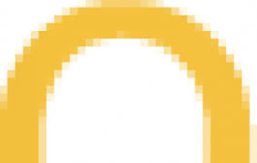
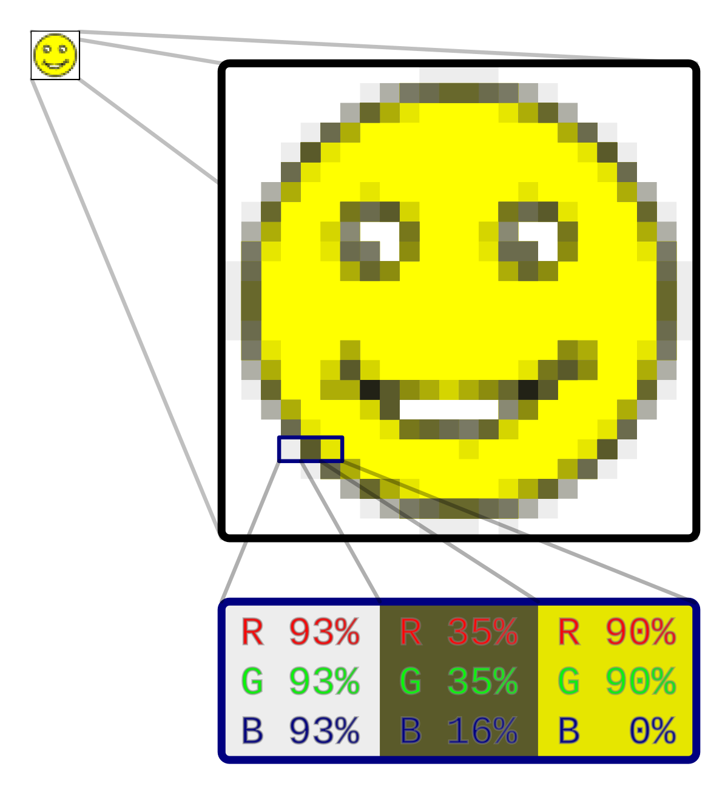
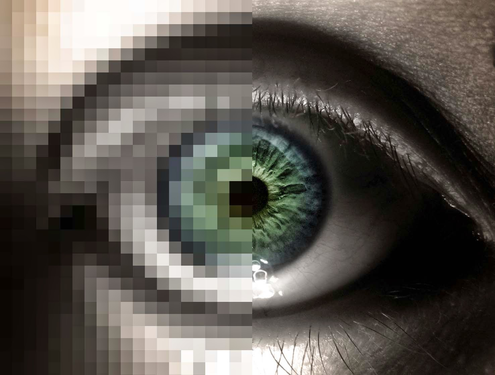

Grafika rastrowa to typ obrazu komputerowego, który składa się z siatki pikseli. Każdy piksel ma swoje właściwości kolorystyczne i jasnościowe. Tego typu grafiki są wykorzystywane w zdjęciach cyfrowych, ilustracjach oraz filmach. Formatami najczęściej spotykanymi w grafice rastrowej są JPEG, PNG i GIF.
Grafika rastrowa doskonale sprawdza się w tworzeniu szczegółowych, realistycznych obrazów, jednak przy powiększaniu obrazu może stracić na jakości, ponieważ jest zależna od rozdzielczości.
    -Piksele – Obraz w grafice rastrowej to zbiór małych punktów, zwanych pikselami. Im więcej pikseli, tym wyższa rozdzielczość i jakość obrazu.
-Rozdzielczość – Określa liczbę pikseli w obrazie. Wyższa rozdzielczość oznacza bardziej szczegółowy obraz, ale także większy rozmiar pliku.
-Skalowanie – Przeskalowanie grafiki rastrowej (powiększenie) prowadzi do utraty jakości obrazu, ponieważ piksele stają się widoczne.
-Formaty – Popularne formaty to JPG, PNG, GIF, BMP, TIFF. Różnią się one kompresją i jakością obrazu.
Kompresja – Niektóre formaty (np. JPG) stosują kompresję, co pozwala na zmniejszenie rozmiaru pliku kosztem częściowej utraty jakości.